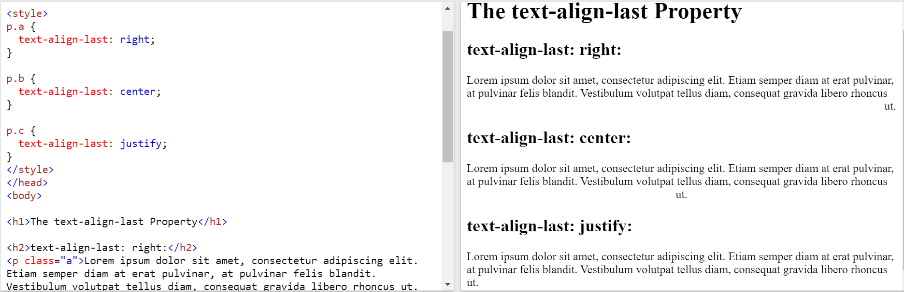

To horizontally center a block element (like <div>), use margin: auto;
Setting the width of the element will prevent it from stretching out to the edges of its container.
The element will then take up the specified width, and the remaining space will be split equally between the two margins:
To center an image, set left and right margin to auto, and make it into a block element.
One method for aligning elements is to use position: absolute;
In my younger and more vulnerable years my father gave me some advice that I've been turning over in my mind ever since.
In my younger and more vulnerable years my father gave me some advice that I've been turning over in my mind ever since. use clear fix to move dic to next line.
Note: If an element is taller than the element containing it, and it is floated, it will overflow outside of its container. You can use the "clearfix hack" to fix this (see example below).